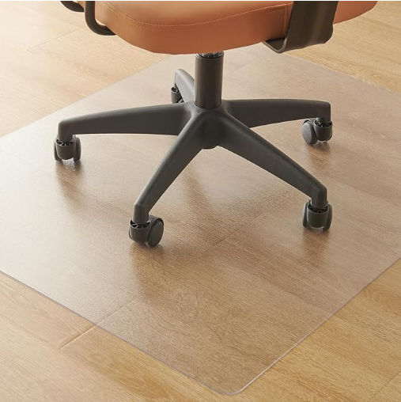
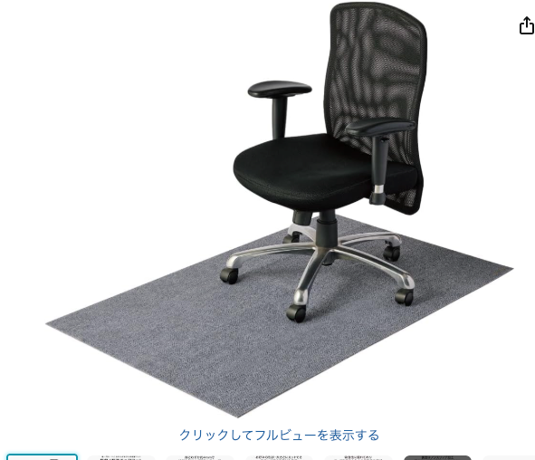
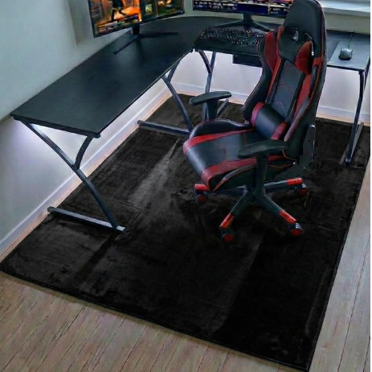

チェアマット、素材で全然違う
——PVC・布・フランネル・ガラスを比較

チェアマットを探すと、サイズ違いだけでなく、素材がいくつもあることに気づきます。よく見る透明のビニールシートだけでなく、布のようなラグ型、分厚いフランネル、ガラス製まであって、価格も千円台から数万円台まで一桁以上開きがあります。何がどう違うのか、価格帯ごとに整理しました。
選び方の整理
見るところはサイズより先に、素材です。
- 素材 — 硬いか柔らかいか、汚れに強いか、耐久性はどうか
- 価格 — 素材によって、同じような面積でも価格が数倍〜十数倍変わる
サイズ（デスクの奥行き・椅子の可動域に合わせる）は、多くの商品でサイズ展開が用意されているので、素材を決めたあとに自分の環境に合わせて選べば足ります。
※本文中の商品リンクはアフィリエイトリンクです（PR）。商品ページとレビューをもとにまとめています。
一覧
- クモリ（Kumori） PVCクリア（80×100cm）¥1,821★4.2（532件）
- エレコム 洗える布タイプ（90×140cm）¥2,980★3.9（167件）
- イキテクス フランネル厚手（130×160cm）¥4,999★4.5（68件）
- Hasipu 強化ガラス（91×91cm）¥7,599★4.7（153件）
※価格・レビュー件数は2026年8月時点のAmazon.co.jpの情報です。同じ4系統の中でもサイズ展開があり、価格はサイズによって変わります。なお海外ブランドの強化ガラス製（Vitrazza・42×48インチ）は¥238,870というものもあり、素材と輸入という条件が重なると、桁がもう一段変わることもあります。
4つの素材の違い
クモリ PVCクリア（80×100cm・¥1,821）

いちばんよく見かける、透明で硬さのあるビニールシートです。レビュー件数532件と実績も多く、価格もいちばん手頃。拭くだけで手入れができ、椅子のキャスターもよく滑ります。硬い分、丸めて収納すると跡がつきやすい、床材によっては滑り止めの吸着力に差が出る、といった声がレビューに見られます。「とにかく安く、まず試したい」人向けです。
エレコム 洗える布タイプ（90×140cm・¥2,980）

見た目はラグに近い、ポリエステル製の柔らかいマットです。丸洗いできるのが特長で、PVCのようなビニール特有の質感が苦手な人に向いています。厚さ4mmと薄めで、キャスターの沈み込みは少なめ。ただしPVCほどツルツル滑らないぶん、椅子の移動はやや重く感じるという声もあります。見た目をインテリアに馴染ませたい人向けです。
イキテクス フランネル厚手（130×160cm・¥4,999）

6.5mm厚と分厚く、吸音をうたうフランネル素材です。ゲーミングチェア向けの黒い大判サイズが中心で、椅子を大きく動かす人・足音や家具の音を抑えたい人に向いています。厚みがある分、椅子の重みでへたってこないかは長期使用での見え方次第というところ。整体師監修という打ち出しで、座り姿勢への配慮も謳われています。
Hasipu 強化ガラス（91×91cm・¥7,599）
4つの中でいちばん高価格帯ですが、レビュー評価も★4.7といちばん高めです。ガラスなのでPVCのように経年で黄ばんだり反ったりせず、傷にも強いのが最大の利点。見た目もクリアで高級感があります。一方で重量があり、設置・掃除の際の取り回しはPVCや布よりも手間がかかります。「長く使うものだから最初から良いものを」という人向けです。
選ぶなら
- とにかく安く済ませたい・まず試したいなら、PVCクリア（¥1,821〜）。いちばん実績も多く定番
- 見た目をインテリアに馴染ませたい・丸洗いしたいなら、布タイプ（¥2,980〜）
- 足音や椅子の移動音を抑えたい・ゲーミング環境なら、フランネル厚手（¥4,999〜）
- 長く使うものとして、黄ばみや傷を気にせず使いたいなら、強化ガラス（¥7,599〜）。価格は上がるが評価もいちばん高い
同じ「チェアマット」でも、素材で用途がはっきり分かれます。サイズはどの系統にも展開があるので、まず自分がどれを優先するか（値段・見た目・静かさ・耐久性）を決めてから、サイズを合わせるのが順番として合っていそうです。
あわせて読みたい